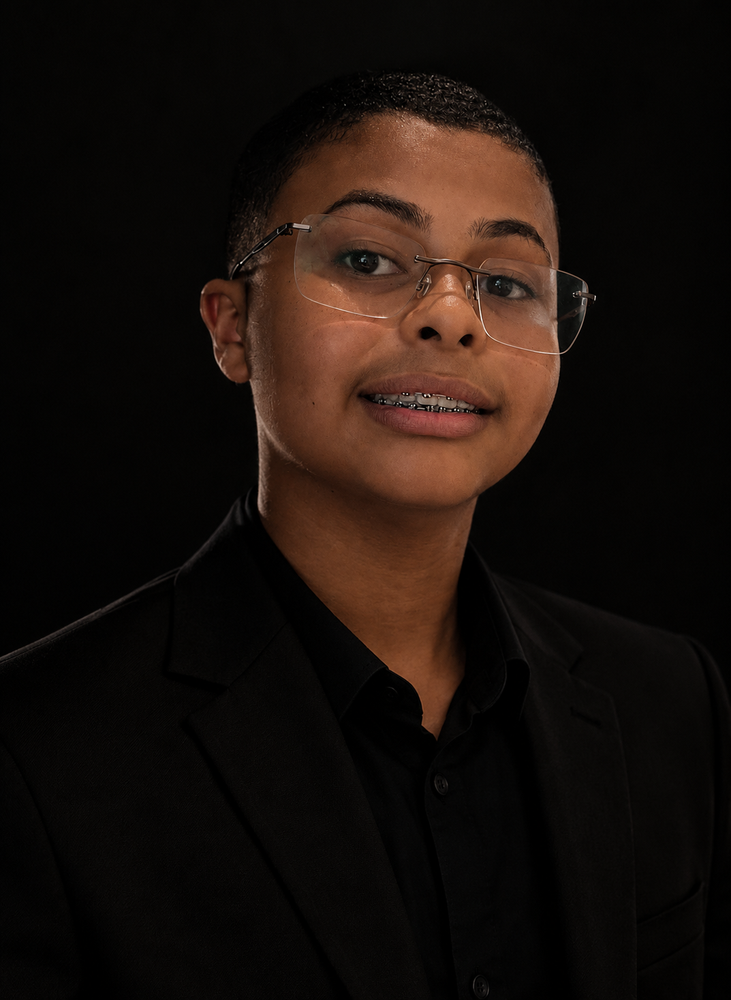
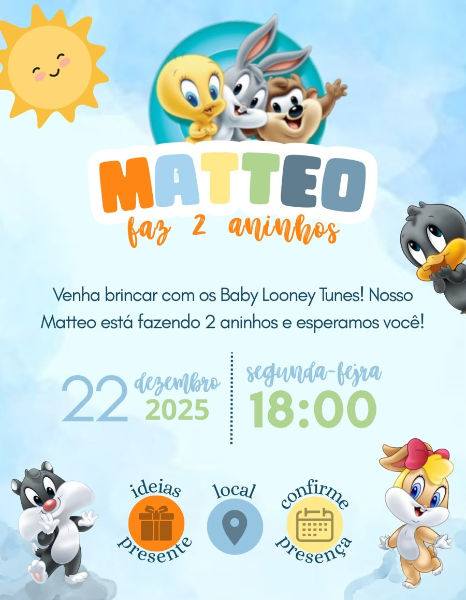
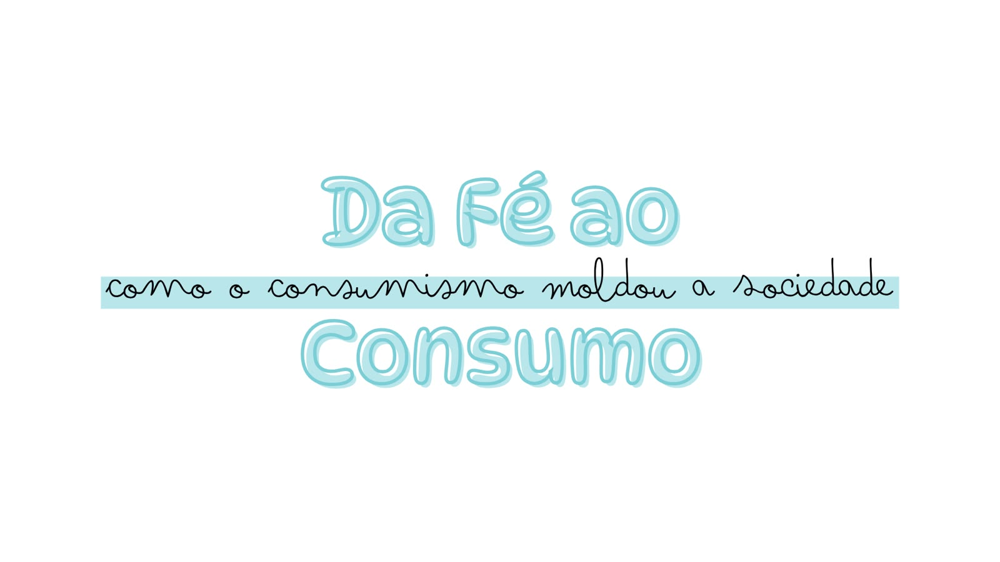

Identidade visual
Logotipos e marcas
DESIGN GRÁFICO • IDENTIDADE VISUAL
Criatividade, identidade e propósito em cada detalhe. Conheça meu trabalho e descubra como posso dar vida às suas ideias.

UM POUCO SOBRE MIM
Sou apaixonado por design gráfico e pela capacidade que a comunicação visual tem de transformar ideias em algo marcante.
Meu foco está na criação de identidades visuais, logotipos, banners, convites e materiais gráficos que transmitam a personalidade de cada projeto.
Também estudo desenvolvimento web e programação, com conhecimentos em HTML, CSS e JavaScript, além de estar aprendendo tecnologias como Python, SQL e SQLite. Tenho interesse em explorar novas ferramentas e unir criatividade e tecnologia para desenvolver projetos cada vez melhores.
Estou sempre buscando aprender, experimentar novas ideias e desenvolver trabalhos com criatividade, cuidado e atenção aos detalhes.
Vamos criar algo juntos? ↗MEU TRABALHO
Uma seleção de categorias que fazem parte do meu universo criativo.
Logotipos e marcas
Divulgação e publicidade

Eventos e comemorações

Apresentações e materiais
VAMOS CONVERSAR?
Tem uma ideia, precisa de uma arte ou quer desenvolver uma identidade visual? Entre em contato comigo.